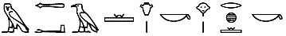
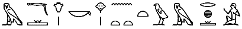
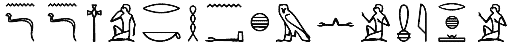
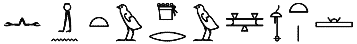
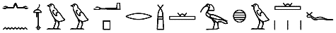

Warum noch eine Zitat-Sammlung? Weil keine der Existierenden den folgenden Ansprüchen gerecht wurde:
- Verifizierte Quellen: Es kursieren so viele falsche Zitate (auch in älteren Zitatensammlungen), dass ein Zitat, bei dem nur ein Name daneben steht, grundsätzlich als unseriös eingestuft werden sollte.
- Originalsprache: Da Übersetzungen ein anderes Sprachgefühl vermitteln und eventuell auch leicht den Sinn verfälschen, sollte jedes Zitat auch im Original angegeben werden. Dadurch lassen sich auch leicht weitere Übersetzungen finden.
- Ursprungszitat: Für manche Gedanken gibt es 100 verschiedene Formulierungen. Wenn man aber schon einen Gedanken einer Person zuschreibt, dann sollte es auch die Person sein, welche den Gedanken vermutlich als erste formuliert und konserviert hat.
- Gehaltvoll: Viele Zitate bedienen sich einer bestimmten sprachlichen Form um prägnant und intelligent zu wirken, der Inhalt lässt sich aber entweder beliebig tauschen (z.B. “X ist nicht alles aber ohne X ist alles nichts.”) oder ist eine rein metaphorische Zuweisung von einem Begriff zu ein paar anderen (z.B. “Vorsicht ist die Mutter der Weisheit”). Mich interessieren allerdings nur Zitate, die einen vollständigen Gedanken einfangen.
Verantwortung und Moral (Act Responsibly)
Wer einen Fehler begangen hat und ihn nicht korrigiert, begeht einen Zweiten.
過而不改，是謂過矣。
Konfuzius, Analekten, 500 v. Chr. in China
Oft tut auch der Unrecht, der nichts tut; wer das Unrecht nicht verbietet, wenn er kann, befiehlt es.
Ἀδικεῖ πολλάκις ὁ μὴ ποιῶν τι, οὐ μόνον ὁ ποιῶν τι.
Marc Aurelius, Selbstbetrachtungen, ≈172
Es gibt Leute, die glauben, alles wäre vernünftig, was man mit einem ernsthaften Gesicht tut.
Georg Christoph Lichtenberg, Sudelbücher Heft E, 1775
Wer mit Ungeheuern kämpft, mag zusehn, dass er nicht dabei zum Ungeheuer wird. Und wenn du lange in einen Abgrund blickst, blickt der Abgrund auch in dich hinein.
Friedrich Nietzsche, Jenseits von Gut und Böse, 1886
Selfishness is not living as one wishes to live, it is asking others to live as one wishes to live. […] Unselfishness recognizes infinite variety of type as a delightful thing, accepts it, acquiesces in it, enjoys it. […] A red rose is not selfish because it wants to be a red rose. It would be horribly selfish if it wanted all the other flowers in the garden to be both red and roses.
Oscar Wilde, The Soul of Man Under Socialism, 1891
You cannot hope to build a better world without improving the individuals. To that end each of us must work for his own improvement, and at the same time share a general responsibility for all humanity, our particular duty being to aid those to whom we think we can be most useful.
Marie Curie., Pierre Curie, 1923
Ehrlich gesagt, kann ich mir nicht richtig vorstellen, wie jemand sagen kann »Ich bin schwach« und dann noch schwach bleibt. Wenn man so etwas doch schon weiß, warum [wird] dann nicht dagegen angegangen, warum deinen Charakter nicht trainieren? Die Antwort war: »Weil es so viel bequemer ist!«
Anne Frank, Tagebucheintrag, 1944
Let natural consequences teach responsible behavior. One of the kindest things we can do is to let the natural or logical consequences of people’s actions teach them responsible behavior. They may not like it or us, but popularity is a fickle standard by which to measure character development. Insisting on justice demands more true love, not less. We care enough for their growth and security to suffer their displeasure.
Stephen R. Covey, Principle-Centered Leadership, 1992
Optimism is a strategy for making a better future. Because unless you believe that the future can be better, you are unlikely to step up and take responsibility for making it so.
Noam Chomsky, Rossetto, 1998
Motivation und Rückschläge (Motivation and Failure)
Sei nicht faul, selbst wenn du Geld hast.
Ἀργὸς μὴ ἴσθι, μηδ᾿ ἂν πλουτῇς
Thales von Milet., Quoted by Demetrios, ≈ 600 v. Chr.
If you are distressed by anything external, the pain is not due to the thing itself, but to your estimate of it; and this you have the power to revoke at any moment.
Εἰ μὲν διά τι τῶν ἐκτὸς λυπῇ, οὐκ ἐκεῖνό σοι ἐνοχλεῖ, ἀλλὰ τὸ σὸν περὶ αὐτοῦ κρῖμα, τοῦτο δὲ ἤδη ἐξαλεῖψαι ἐπὶ σοί ἐστιν
Marc Aurelius, Meditations (8-47), ≈172
Nicht weil es schwierig ist, wagen wir es nicht, sondern weil wir es nicht wagen, ist es schwierig.
Non quia difficilia sunt non audemus, sed quia non audemus difficilia sunt.
Lucius Annaus Seneca, Briefe an Lucilius (XVIII), 26
Auch eine Enttäuschung, wenn sie nur gründlich und endgültig ist, bedeutet einen Schritt vorwärts.
Max Planck, Vortrag in Königsberg, 1910
The most common way people give up their power is by thinking they don’t have any.
Alice Malsenior Walker, (zugeschrieben), ∗1944
Wo kämen wir hin, wenn alle sagten, wo kämen wir hin, und niemand ginge, um zu sehen, wohin man käme, wenn man ginge?
Wo chiemte mer hi wenn alli seite wo chiemte mer hi und niemer giengti fur einisch z’luege wohi dass me chiem we me gieng.
Kurt Marti, Rosa Loui: Vierzg Gedicht ir Bärner Umgangsschprach, 1967
If you want to succeed, double your failure rate.
Thomas J. Watson (President of IBM), Quoted in “Field Notes”, 1961
Dankbarkeit und Demut (Gratitude and Humility)
Bei allen erfreulichen, nützlichen und daher von dir geliebten Dingen unterlaß nie, dir immer wieder klar zu machen, was sie eigentlich sind. Fang dabei mit den unscheinbarsten Dingen an. Wenn du einen Krug liebst, so sage dir: »Es ist ein Krug, den ich liebe.« Dann wirst du nämlich nicht deine Fassung verlieren, wenn er zerbricht. Wenn du dein Kind oder deine Frau küsst, so sage dir: »Es ist ein Mensch, den du küsst.« Dann wirst du nämlich nicht die Fassung verlieren, wenn er stirbt.
Ἐφ’ ἑκάστου τῶν ψυχαγωγούντων ἢ χρείαν παρεχόντων ἢ στεργομένων μέμνησο ἐπιλέγειν, ὁποῖόν ἐστιν, ἀπὸ τῶν σμικροτάτων ἀρξάμενος· ἂν χύτραν στέργῃς, ὅτι χύτραν στέργω. κατεαγείσης γὰρ αὐτῆς οὐ ταραχθήσῃ· ἂν παιδίον σαυτοῦ καταφιλῇς ἢ γυναῖκα, ὅτι ἄνθρωπον καταφιλεῖς· ἀποθανόντος γὰρ οὐ ταραχθήσῃ.
Epiktet, Enchiridion 3, ≈125
Die Asche macht alle gleich.
Aequat omnis cinis.
Lucius Annaus Seneca, Briefe an Lucilius, 26
All of humanity’s problems stem from man’s inability to sit quietly in a room alone.
Tout le malheur des hommes vient de ne sçavoir pas se tenir en repos dans une chambre.
Blaise Pascal, Pensées, 1670
I have often thought it would be a blessing if each human being were stricken blind and deaf for a few days during their early adult life. Darkness would make them more appreciative of sight; silence would teach them the joys of sound.
Helen Keller, Three Days to See, 1933
No matter where you stand, no matter how much popularity you have, no matter how much education you have, no matter how much money you have, you have it because somebody in this universe helped you to get it. And when you see that, you can’t be arrogant, you can’t be supercilious.
Martin Luther King, Conquering Self-centeredness, 1957
Sprache und Kommunikation (Language and Communication)
We should have a great many fewer disputes in the world if words were taken for what they are, the signs of our ideas only; and not for things themselves.
John Locke, An Essay Concerning Human Understanding, 1689
Wise sayings often fall on barren ground, but a kind word is never thrown away.
Arthur Helps, Thoughts in the Cloister and the Crowd, 1835
Eine Wahrheit kann erst wirken, wenn der Empfänger für sie reif ist.
Christian Morgenstern., Stufen (Lebensweisheit), 1910
Die Grenzen meiner Sprache bedeuten die Grenzen meiner Welt.
Ludwig Wittgenstein, Tractatus logico-philosophicus, 1918
Men often hate each other because they fear each other; they fear each other because they don’t know each other; they don’t know each other because they cannot communicate; they cannot communicate because they are separated.
Martin Luther King, Stride Toward Freedom: The Montgomery Story, 1958
Most people do not listen with the intent to understand; they listen with the intent to reply.
Stephen R. Covey, The Seven Habits Of Highly Effective People, 1989
Gedacht heißt nicht immer gesagt – gesagt heißt nicht immer richtig gehört – gehört heißt nicht immer richtig verstanden – verstanden heißt nicht immer einverstanden – einverstanden heißt nicht immer angewendet – angewendet heißt noch lange nicht beibehalten.
Konrad Lorenz, (zugeschrieben),
It is vital to remember that information — in the sense of raw data — is not knowledge, that knowledge is not wisdom, and that wisdom is not foresight. But information is the first essential step to all of these.
Arthur C. Clarke, Humanity will survive information deluge, 2003
Wahrheit und Erkenntnis (Truth and Discovery)
Fühl Dich nicht erhaben wegen Deiner Bildung, sondern berate dich mit dem Unwissenden, wie mit dem Wissenden, denn die Grenze der Kunst ist nicht erreicht und es existiert kein Künstler, dessen Fähigkeit vollendet ist.
Ptahhotep, Maxime 1, 2350 v. Chr.





Einzugestehen, dass man etwas nicht weiß, ist Wissen.
不知為不知，是知也
Konfuzius, Analekten, 500 v. Chr. in China
Es zeichnet einen gebildeten Geist aus, sich mit jenem Grad an Genauigkeit zufrieden zugeben, den die Natur der Dinge zulässt, und nicht dort Exaktheit zu suchen, wo nur Annäherung möglich ist.
πεπαιδευμένου γάρ ἐστιν ἐπὶ τοσοῦτον τἀκριβὲς ἐπιζητεῖν καθ᾽ ἕκαστον γένος.
Aristoteles, Nikomachische Ethik, ≈ 350 v. Chr.
Niemand irrt für sich allein. Er verbreitet seinen Unsinn auch in seiner Umgebung.
Nemo sibi tantummodo errat, sed alieni erroris et causa et auctor est.
Lucius Annaus Seneca, De Vita Beata, (58)
In questions of science, the authority of a thousand is not worth the humble reasoning of a single individual.
Sì perché l’autorità dell’opinione di mille nelle scienze non val per una scintilla di ragione di un solo.
Galileo Galilei, Terza lettera al Sig. Marco Velseri, 1612
Das Halbwissen ist siegreicher, als das Ganzwissen: es kennt die Dinge einfacher, als sie sind, und macht daher seine Meinung fasslicher und überzeugender.
Friedrich Nietzsche, Menschliches, Allzumenschliches, 1878
Misstraue deinem Urteil, sobald du darin den Schatten eines persönlichen Motivs entdecken kannst.
Marie von Ebner-Eschenbach, Aphorismen, 1893
Many people think they are thinking when they are merely rearranging their prejudices.
William Fitzjames Oldham, Zion’s Herald, 1906
There is always a well-known solution to every human problem — neat, plausible, and wrong.
Henry Louis Mencken, Prejudices, 1920
Wenige sind imstande, von den Vorurteilen der Umgebung abweichende Meinungen gelassen auszusprechen; die Meisten sind sogar unfähig, überhaupt zu solchen Meinungen zu gelangen.
Albert Einstein, Neun Aphorismen, 1954
The smart way to keep people passive and obedient is to strictly limit the spectrum of acceptable opinion, but allow very lively debate within that spectrum—even encourage the more critical and dissident views. That gives people the sense that there’s free thinking going on, while all the time the presuppositions of the system are being reinforced by the limits put on the range of the debate.
Noam Chomsky, The Common Good, 1998
Sinn und Glück (Purpose and Happiness)
Wer an den Spiegel tritt, um sich zu ändern, der hat sich bereits geändert.
Qui ad speculum venerat ut se mutaret, iam mutaverat.
Lucius Annaus Seneca, Über den Zorn, (45)
Although the world is full of suffering, it is full also of the overcoming of it. My optimism, then, does not rest on the absence of evil, but on a glad belief in the preponderance of good and a willing effort always to cooperate with the good, that it may prevail.
Helen Adams Keller, Optimism, 1903
Perhaps it would be a good idea, fantastic as it sounds, to muffle every telephone, stop every motor and halt all activity for an hour some day to give people a chance to ponder for a few minutes on what it is all about, why they are living and what they really want.
James Truslow Adams, Happiness and the Art of Living in McNaught’s Monthly, 1926
If you observe a really happy man you will find him building a boat, writing a symphony, educating his son, growing double dahlias in his garden, or looking for dinosaur eggs in the Gobi desert. He will not be searching for happiness as if it were a collar button that has rolled under the radiator. He will not be striving for it as a goal in itself. He will have become aware that he is happy in the course of living life twenty-four crowded hours of the day.
Walter Béran Wolfe, How to be Happy Though Human, 1931
Lyrische Beschreibung der Welt (Poetic Description of the World)
Nothing vast enters the life of mortals without a curse.
οὐδὲν ἕρπει · θνατῶν βιότῳ πάμπολύ γ᾽ ἐκτὸς ἄτας.
Sophocles, Antigone, 442 v. Chr.
Philosophy is written in this grand book — I mean the Universe — which stands continually open to our gaze, but it cannot be understood unless one first learns to comprehend the language and interpret the characters in which it is written. It is written in the language of mathematics, and its characters are triangles, circles, and other geometrical figures, without which it is humanly impossible to understand a single word of it; without these, one is wandering around in a dark labyrinth.
La filosofia è scritta in questo grandissimo libro, che continuamente ci sta aperto innanzi agli occhi (io dico l’Universo), ma non si può intendere, se prima non il sapere a intender la lingua, e conoscer i caratteri ne quali è scritto. Egli è scritto in lingua matematica, e i caratteri son triangoli, cerchi ed altre figure geometriche, senza i quali mezzi è impossibile intenderne umanamente parola; senza questi è un aggirarsi vanamente per un oscuro labirinto.
Galileo Galilei, Il Saggiatore, 1623
In irgendeinem abgelegenen Winkel des in zahllosen Sonnensystemen flimmernd ausgegossenen Weltalls gab es einmal ein Gestirn, auf dem kluge Tiere das Erkennen erfanden. Es war die hochmütigste und verlogenste Minute der »Weltgeschichte«: aber doch nur eine Minute. Nach wenigen Atemzügen der Natur erstarrte das Gestirn, und die klugen Tiere mussten sterben.
Friedrich Nietzsche, Über Wahrheit und Lüge im außermoralischen Sinne, 1873
The cheese-mites asked how the cheese got there,
Arthur Conan Doyle, A Parable, 1898
And warmly debated the matter;
The Orthodox said that it came from the air,
And the Heretics said from the platter.
They argued it long and they argued it strong,
And I hear they are arguing now;
But of all the choice spirits who lived in the cheese,
Not one of them thought of a cow.
It is not the critic who counts, not the man who points out how the strong man stumbled, or where the doer of deeds could have done better. The credit belongs to the man who is actually in the arena; whose face is marred by the dust and sweat and blood; who strives valiantly; who errs and comes short again and again; who knows the great enthusiasms, the great devotions and spends himself in a worthy cause; who at the best, knows in the end the triumph of high achievement, and who, at worst, if he fails, at least fails while daring greatly; so that his place shall never be with those cold and timid souls who know neither victory nor defeat.
Theodore Roosevelt, Citizenship in a Republic, 1910
Bäume sind Gedichte, die die Erde in den Himmel schreibt. Wir fällen sie nieder und verwandeln sie in Papier, um unsere Leere zu dokumentieren.
Trees are poems that the earth writes upon the sky. We fell them down and turn them into paper that we may record our emptiness.
Khalil Gibran, Sand und Schaum, 1926
In dem Moment, in dem man etwas seine ganze Aufmerksamkeit schenkt, selbst einem Grashalm, wird es zu einer geheimnisvollen, Ehrfurcht gebietenden, unbeschreiblich großartigen eigenen Welt.
The moment one gives close attention to anything, even a blade of grass, it becomes a mysterious, awesome, indescribably magnificent world in itself.
Henry Miller, Plexus, 1953
Such is oft the course of deeds that move the wheels of the world: small hands do them because they must, while the eyes of the great are elsewhere.
John Ronald Reuel Tolkien, The Fellowship of the Ring, 1954